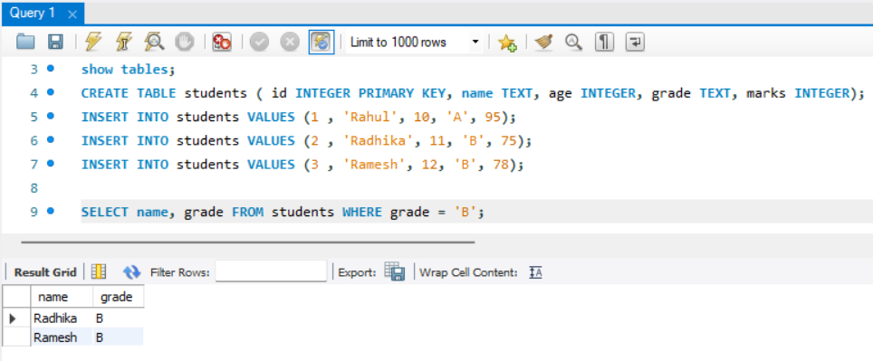
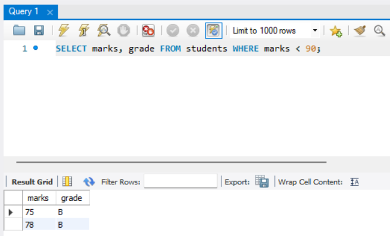
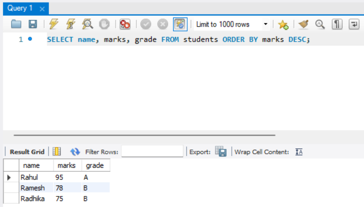
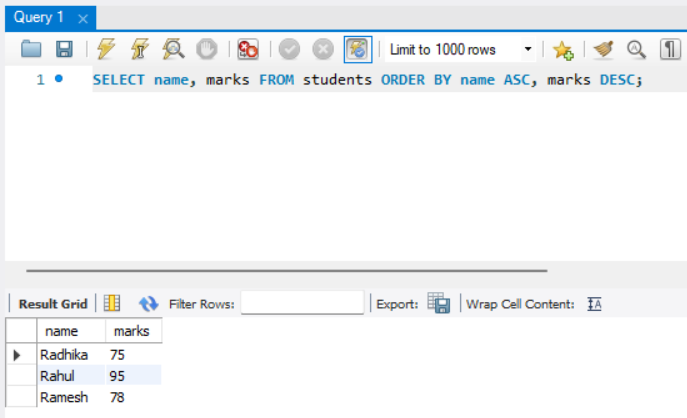
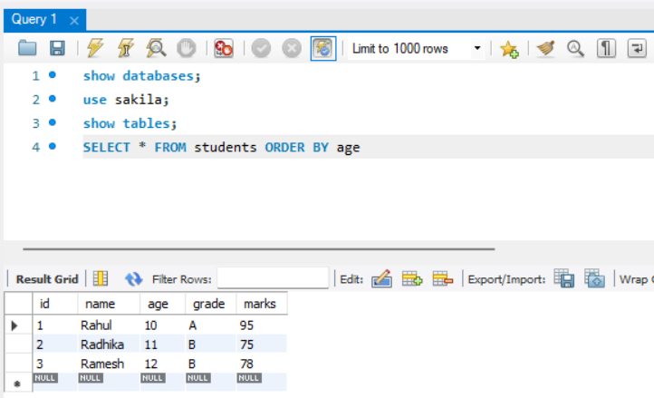

WHERE Clause
Contents
WHERE Clause¶
What is WHERE clause?¶
After familiarizing yourself with using the SELECT and FROM clauses to retrieve data, the subsequent progression involves applying data filters through the utilization of the WHERE clause.
SQL WHERE clauses are used to filter rows in a query based on specified conditions. They allow you to retrieve only the rows that meet specific criteria from a table. The WHERE clause is commonly used with the SELECT statement, but it can also be used with other statements like UPDATE and DELETE to apply conditions to those operations.(we will discuss this in next chapter)
How WHERE clause is used?¶
Here’s the basic syntax of the WHERE clause:
SELECT column1, column2, ...
FROM table_name
WHERE condition;
The WHERE clause is placed after the FROM clause and before any other clauses (e.g., GROUP BY, ORDER BY). The condition specified in the WHERE clause determines which rows are included in the result set. The condition can be a combination of comparison operators, logical operators, and functions.
Here are some examples of using the WHERE clause:
1. Selecting rows with a specific value:¶
SELECT column1, column2
FROM table_name
WHERE column1 = 'value';
2. Selecting rows based on multiple conditions:¶
SELECT column1, column2
FROM table_name
WHERE column1 = 'value' AND column2 > 10;
3. Using comparison operators:¶
SELECT column1, column2
FROM table_name
WHERE column1 > 100 OR column2 IS NULL;
4. Using wildcard characters:¶
SELECT column1, column2
FROM table_name
WHERE column1 LIKE 'abc%';
The WHERE clause allows you to apply various conditions to filter the rows returned by a query. It provides flexibility in retrieving specific subsets of data based on your requirements.
LIKE and NOT LIKE :¶
In SQL, LIKE and NOT LIKE are operators used to perform pattern matching within WHERE clause conditions. They are typically used with strings, allowing you to filter query results based on specific patterns.
Here is how they work:
LIKE¶
This operator is used when you want to search for a specified pattern in a column. SQL LIKE clause is used with the WHERE clause to search for a specified pattern in a column. Wildcards are used with the LIKE operator to make a pattern. These wildcards are % (percent sign) and _ (underscore).
_ represents a single character.
Example:
SELECT * FROM table_name WHERE column_name LIKE 'A%';
This SQL statement would return all rows from the table_name where the column_name begins with the letter “A”.
NOT LIKE¶
This operator is used to exclude rows that match a specified pattern. It’s the opposite of the LIKE operator.
Example:
SELECT * FROM table_name WHERE column_name NOT LIKE 'A%';
This would return all rows where the column_name does not start with “A”.


How does the where clause work?¶
The WHERE clause in SQL is used to filter rows from a table based on specified conditions. It allows you to selectively retrieve only the rows that satisfy the given conditions, while excluding others. The WHERE clause works by evaluating the condition for each row in the table and including only those rows that meet the condition in the result set.
Here’s how the WHERE clause works:
The SELECT statement is used to retrieve data from a table. The WHERE clause is included after the FROM clause in the SELECT statement.
The WHERE clause contains a condition that specifies the filtering criteria. It can consist of one or more expressions involving columns, values, comparison operators, logical operators (AND, OR, NOT), and functions.(we will discuss comparison operators, logical operators (AND, OR, NOT), and functions in next chapter of operators)
The condition is evaluated for each row in the table. If a row satisfies the condition, it is included in the result set. If the condition is not met, the row is excluded from the result set.
The result set contains only the rows that meet the specified condition.
For example, consider the following query:
SELECT column1, column2
FROM table_name
WHERE column1 = 'value' AND column2 > 10;
In this query, the WHERE clause specifies two conditions: column1 = 'value' and column2 > 10. The database engine evaluates these conditions for each row in the table. Only the rows that satisfy both conditions will be included in the result set.
The WHERE clause allows you to apply various conditions to filter the rows returned by a query. It provides a powerful tool for selecting specific subsets of data based on your criteria.
SQL ORDER BY CLAUSE¶
What is ORDER BY clause?¶
The ORDER BY clause in SQL is used to sort the result set of a query based on one or more columns. It allows you to specify the sorting order, such as ascending (ASC) or descending (DESC), for the values in the specified column(s). The ORDER BY clause is typically used with the SELECT statement to arrange the query results in a desired order.
How is the ORDER BY clause used?¶
Here’s the basic syntax of the ORDER BY clause:
SELECT column1, column2, ...
FROM table_name
ORDER BY column1 [ASC|DESC], column2 [ASC|DESC], ...;
In the syntax above, you specify the columns you want to sort by within the ORDER BY clause. Each column can be followed by either ASC (ascending) or DESC (descending) to determine the sorting order. By default, if no sorting order is specified, ASC is assumed.
Here are some examples of using the ORDER BY clause:
Sorting in ascending order:
SELECT column1, column2
FROM table_name
ORDER BY column1 ASC;
Sorting in descending order:
SELECT column1, column2
FROM table_name
ORDER BY column1 DESC;
Sorting by multiple columns:
SELECT column1, column2
FROM table_name
ORDER BY column1 ASC, column2 DESC;
In the above examples, the ORDER BY clause arranges the query results based on the specified columns in the specified order. The sorting is applied to the entire result set, and the sorted rows are returned as the output of the query.
The ORDER BY clause is useful when you want to retrieve data in a specific order, such as sorting names alphabetically, ordering numeric values from highest to lowest, or arranging dates chronologically. It allows you to control the presentation of the query results by specifying the desired sorting criteria.

How does the ORDER BY clause work?¶
Here’s how the ORDER BY clause works:
The SELECT statement retrieves data from a table or tables.
The ORDER BY clause is included at the end of the SELECT statement, after the WHERE clause (if present).
Within the ORDER BY clause, you specify the column(s) or expressions that determine the sorting order of the result set.
By default, the sorting order is ascending (ASC), meaning the values will be arranged in ascending order from lowest to highest. You can also explicitly specify descending (DESC) order to arrange values from highest to lowest.
If multiple columns or expressions are specified in the ORDER BY clause, the sorting is performed sequentially based on the specified order. The first column/expression mentioned will be the primary sort key, followed by subsequent columns/expressions.
The result set is then sorted according to the specified order, and the sorted rows are returned as the output of the query.
For example, consider the following query:
SELECT column1, column2
FROM table_name
ORDER BY column1 ASC, column2 DESC;
In this query, the ORDER BY clause specifies that the result set should be sorted in ascending order based on column1 and then in descending order based on column2. The database engine performs the sorting according to these instructions, arranging the rows accordingly.
The ORDER BY clause is particularly useful when you want to present the query results in a specific order, such as sorting names alphabetically, ordering numeric values, or arranging dates chronologically. It allows you to control the sequence of the output based on your requirements.


LIMIT and OFFSET:¶
The LIMIT and OFFSET clauses in SQL are used to control the number of records returned by a query, and to specify from which point to start returning records. This is especially useful for implementing pagination in applications where you need to display a subset of records at a time.
LIMIT Clause :¶
LIMIT restricts the number of rows returned by a query. It’s widely used in situations where you only need a specific number of rows from a result set.
syntax:
SELECT columns FROM table
LIMIT [number_of_rows];
for example , consider this query:
SELECT * FROM student LIMIT 5;
This query returns the first 5 records from the student table.
OFFSET Clause :¶
OFFSET skips a specified number of rows before beginning to return rows from the query.
SELECT columns FROM table
LIMIT [number_of_rows] OFFSET [row_num];
for example , consider this query:
SELECT * FROM student LIMIT 5 OFFSET 10;
This query skips the first 10 records and then returns the next 5 records from the student table.
Considerations :
The OFFSET value is zero-based. This means OFFSET 0 starts from the very first record.
Using LIMIT and OFFSET can impact performance, especially with a large OFFSET value, as the database still has to read through all the preceding rows.
Always ensure your results are ordered (using ORDER BY) when using LIMIT and OFFSET for consistent output.
Let’s consider an example where you have a table named Students and you want to apply LIMIT and OFFSET clauses along with an ORDER BY statement. The Students table could include columns such as StudentID, Name, and Grade.
Assuming you want to display student records in descending order of their grades, and you want to implement pagination showing 10 students per page, here’s how the SQL query would look:
Display the first 10 students with the highest grades.
SELECT StudentID, Name, Grade
FROM Students
ORDER BY Grade DESC
LIMIT 10 OFFSET 0;
Explanation :
ORDER BY Grade DESC: This part of the query ensures that the students are listed in descending order of their grades, meaning students with higher grades are listed first.
LIMIT 10: This restricts the output to 10 rows, which is useful for displaying a specific number of students per page.
OFFSET: This specifies the number of rows to skip before starting to return rows from the query. For the first page, OFFSET is 0 as you want to start from the first row. For the second page, it’s 10 (skipping the first 10 rows), and so on.
This approach is a classic example of how LIMIT and OFFSET can be used for effective pagination in applications where you need to present data in a structured and manageable way.
Exercise¶
Theory Questions:¶
What is the primary purpose of the WHERE clause in SQL?
How would you retrieve rows from a table where a particular column’s value is null?
Describe the difference between the = and LIKE operators when used in a WHERE clause.
How can you combine multiple conditions in a WHERE clause?
When might you want to use the NOT keyword in a WHERE clause?
Why is it important to be cautious when using the WHERE clause with the DELETE statement?
What is the difference between using AND and OR operators in a WHERE clause?
Describe the primary function of the ORDER BY clause.
How can you reverse the default sorting order of the ORDER BY clause?
If you have multiple columns in an ORDER BY clause, how does SQL determine the sorting order?
How would you sort a result set first by one column in ascending order, and then by another column in descending order?
Can the ORDER BY clause be used with aggregate functions? If so, provide an example.
Is it necessary to include the columns listed in the ORDER BY clause in the SELECT statement? Why or why not?
If a column has null values and you’re using the ORDER BY clause, how are the null values treated in the sorted result set?
How do the WHERE and ORDER BY clauses affect the performance of a SQL query? What are some best practices to ensure optimal performance?
In what scenarios would you use both the WHERE and ORDER BY clauses together in a single SQL statement?
Explain how wildcard characters can be utilized in the WHERE clause to filter results.
If you omit the ORDER BY clause, in what order does the database return the results?
How does the use of indexes impact queries with the WHERE and ORDER BY clauses?
What is the purpose of the LIMIT clause in SQL?
How does the OFFSET clause work in conjunction with the LIMIT clause?
Can LIMIT and OFFSET affect query performance? How?
Is it possible to use LIMIT without OFFSET, and vice versa?
Table for questions:-
CREATE TABLE Employees (
id INT PRIMARY KEY,
first_name VARCHAR(50),
last_name VARCHAR(50),
department VARCHAR(50),
state VARCHAR(50),
city VARCHAR(50),
job_title VARCHAR(100),
hire_date DATE,
salary DECIMAL(10, 2),
phone_number VARCHAR(20),
age INT,
office_location VARCHAR(100)
);
INSERT INTO Employees (id, first_name, last_name, department, state, city, job_title, hire_date, salary, phone_number, age, office_location) VALUES
(1, 'John', 'Doe', 'Marketing', 'Texas', 'Houston', 'Marketing Manager', '2019-05-23', 60000, '(212)555-1234', 35, 'Houston Office'),
(2, 'Sarah', 'Smith', 'Sales', 'California', 'San Diego', 'Sales Representative', '2018-07-15', 45000, '(619)555-5678', 28, 'San Diego Office'),
(3, 'James', 'Johnson', 'Engineering', 'Florida', 'Miami', 'Senior Engineer', '2016-03-11', 75000, '(305)555-7890', 42, 'Miami Office'),
(4, 'Patricia', 'Carter', 'IT', 'Texas', 'Austin', 'IT Specialist', '2020-01-04', 65000, '(512)555-3456', 30, 'Austin Office'),
(5, 'Jennifer', 'Wright', 'Marketing', 'California', 'Los Angeles', 'Marketing Coordinator', '2017-09-26', 50000, '(213)555-6789', 27, 'Los Angeles Office'),
(6, 'Michael', 'Anderson', 'Finance', 'New York', 'New York', 'Finance Manager', '2015-02-20', 85000, '(646)555-1234', 45, 'New York Office'),
(7, 'Linda', 'Martinez', 'HR', 'Arizona', 'Phoenix', 'HR Director', '2013-10-13', 90000, '(480)555-5678', 38, 'Phoenix Office'),
(8, 'Robert', 'Lee', 'Sales', 'New York', 'New York', 'Sales Manager', '2014-08-29', 70000, '(646)555-7890', 32, 'New York Office'),
(9, 'Maria', 'Garcia', 'Engineering', 'California', 'San Francisco', 'Chief Engineer', '2012-06-17', 95000, '(415)555-3456', 40, 'San Francisco Office'),
(10, 'David', 'Robinson', 'Customer Service', 'Nevada', 'Las Vegas', 'Customer Service Rep', '2021-12-01', 40000, '(702)555-6789', 29, 'Las Vegas Office');
Coding Questions:¶
Q: Select all employees who work in the ‘Marketing’ department.
Q: Find all employees whose first name is ‘Sarah’.
Q: Get all employees who live in the city ‘Miami’.
Q: Retrieve all employees whose last name starts with ‘C’.
Q: List all employees who have ‘Manager’ in their job title.
Q. Write a SQL query to retrieve the first 5 records from the Employees table.
Q. Create a SQL query to select the top 3 highest-paid employees from the Employees table.
Q: Select all employees whose last name contains the letter ‘e’.
Q: Get all employees whose job title ends with ‘Specialist’.
Q: Select all employees who have ‘Vice’ at the beginning of their job title.
Q: Order employees by their salary in descending order.
Q. Suppose you need to display employee records 5 at a time on a website. Write a SQL query to display the second set of 5 employees, ordered by hire_date.
Q. Write a query to list the first 5 employees in the ‘Marketing’ department, ordered by their salary in descending order.
Q: Retrieve all employees who were hired on the 15th of any month.
Q: Get all employees whose first name does not start with ‘A’ or ‘B’.(use AND)
Q: Select all employees who have ‘Director’ in their job title and are from the ‘New York’ office.(use AND)
Q. Write an SQL query to find the salary of employees whose first name contains ‘a’ and who work in Texas.
Q. List all employees whose last name does not contain ‘son’ and do not work in the ‘Engineering’ department.
Q. Find all employees whose phone number ends with ‘7890’.
Q. Retrieve all employees who have either ‘Engineer’ or ‘Specialist’ in their job title.
Q. List all employees who do not live in ‘New York’, ‘Miami’, or ‘Austin’.